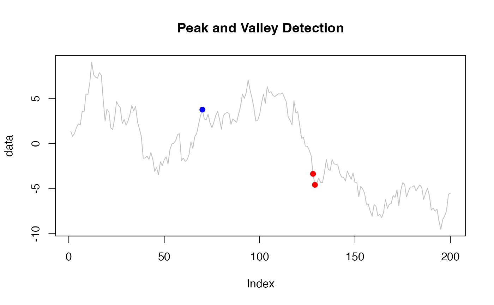

R/Thresholding_algorithm.R
Thresholding_algorithm.RdImplements a real-time peak and valley detection algorithm based on a moving average and standard deviation filter. This method is robust to signal autocorrelation and was adapted from a community solution on StackOverflow: https://stackoverflow.com/questions/72784873/conditional-peak-valley-signal-detection-in-realtime-timeseries-data-r.
Thresholding_algorithm(y, lag = 100, threshold = 3, influence = 0)A numeric vector representing the time series to analyze.
Integer. The size of the moving window used to compute the rolling mean and standard deviation. Default is 100.
Numeric. The number of standard deviations a new value must differ from the rolling mean to be classified as a signal. Default is 3.
Numeric (between 0 and 1). Determines how much influence a detected signal has on the recalculation of mean and standard deviation. An influence of 0 means signals are completely excluded from future statistics (more robust); 1 means full influence (less robust). Default is 0.
A list with the following elements:
An integer vector of the same length as y containing 1 (peak), -1 (valley), or 0 (no signal).
A numeric vector with the rolling mean used at each step.
A numeric vector with the rolling standard deviation used at each step.
The algorithm identifies peaks and valleys by comparing each new observation to a rolling mean and standard deviation.
If a point deviates from the mean by more than threshold times the rolling standard deviation, it is classified as a signal:
1 for a peak,
-1 for a valley,
0 for no signal.
After each signal is detected, the moving mean and standard deviation are updated using the influence parameter to moderate the impact of the signal on future values.
set.seed(42)
data <- cumsum(rnorm(200)) # Simulate time series
result <- Thresholding_algorithm(data, lag = 30, threshold = 3, influence = 0.5)
plot(data, type = "l", main = "Peak and Valley Detection", col = "gray")
points(which(result$signals == 1), data[result$signals == 1], col = "blue", pch = 19) # Peaks
points(which(result$signals == -1), data[result$signals == -1], col = "red", pch = 19) # Valleys
